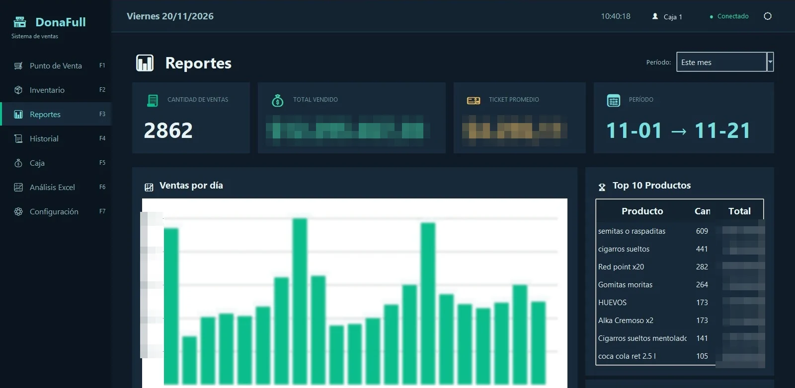
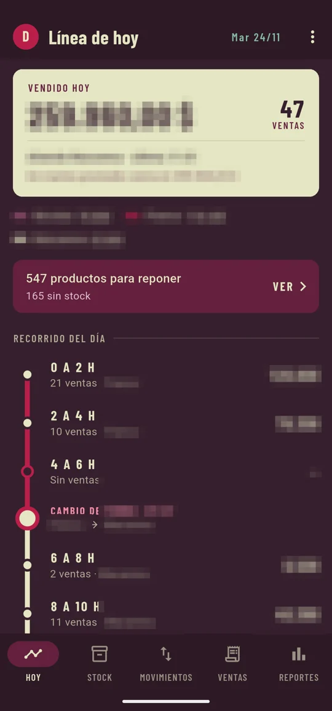
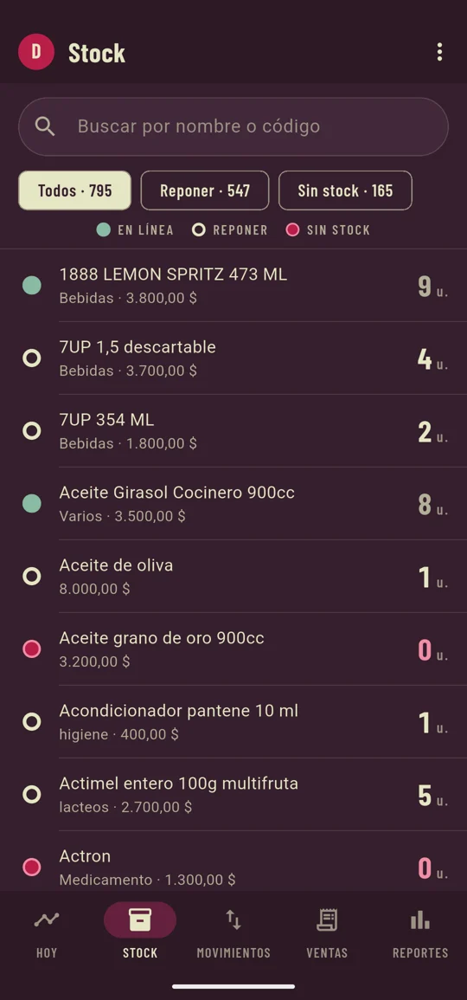
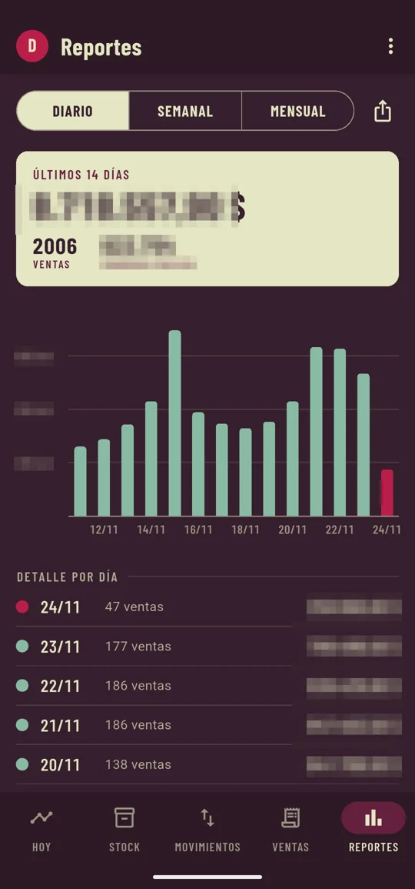
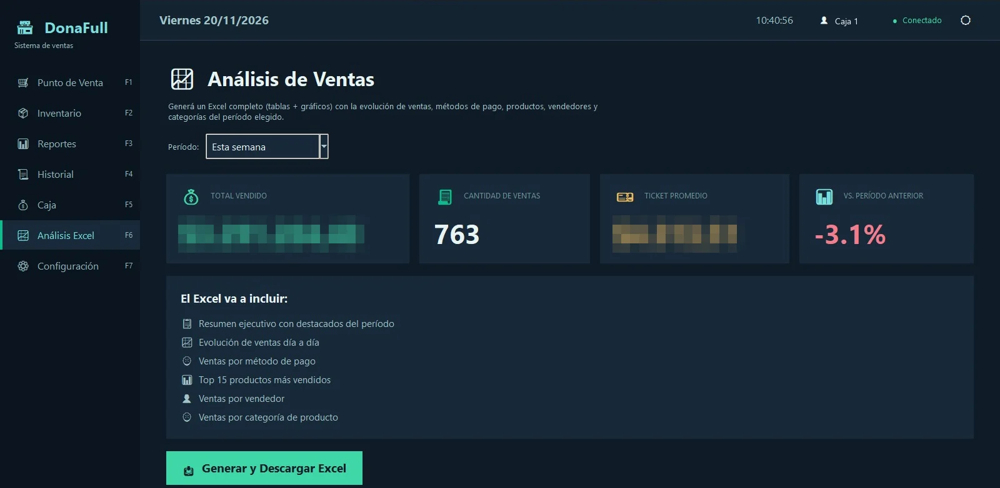

01 · Caso real
DonaFull.
Sistema de caja, inventario y reportes para un drugstore de barrio, con una app de celular para que el dueño siga el negocio desde donde esté.
- Cliente
- Drugstore de barrio
- Tipo
- Programa de PC + app de celular
- Tecnología
- Python · SQLite · Flutter · Firebase
- Año
- 2026
Pantallas de DonaFull

2.862ventas en un mes
790productos cargados
7secciones con atajo de teclado
El problema
Qué necesitaba.
Un drugstore vende cientos de productos chicos por día, con más de un cajero y varias formas de pago.
Hacía falta cobrar rápido, saber qué queda en stock y cerrar cada turno sin que falte plata. Y que el dueño pudiera ver todo sin estar en el local.
Qué construí
- Punto de venta con lector de códigos y atajos de teclado (F1 a F7).
- Cobro en efectivo, tarjeta, transferencia o mixto, con el vuelto calculado.
- Inventario con buscador, categorías y aviso de stock bajo.
- Cierre de caja por turno: compara lo que debería haber con lo que se contó.
- Reportes del mes: ventas por día y los productos más vendidos.
- Exporta un Excel con gráficos por día, medio de pago, vendedor y categoría.
- DonaFull Monitor: la app del dueño, con el día dibujado como una línea de subte, el stock y los reportes en tiempo real.

App del dueño
DonaFull Monitor.
El dueño no tiene que estar en el local para saber cómo va. Abre el celular y ve el día dibujado como una línea de subte: cada franja horaria es una estación, cada cajero una línea de color y el cambio de turno, un transbordo.
Stock con alertas de reposición, movimientos, ventas y reportes diarios, semanales y mensuales. Todo en tiempo real, sincronizado con la caja de la PC.



Más pantallas


¿Querés algo así para tu negocio?
 Siguiente proyecto
TurnoFacil →
Siguiente proyecto
TurnoFacil →